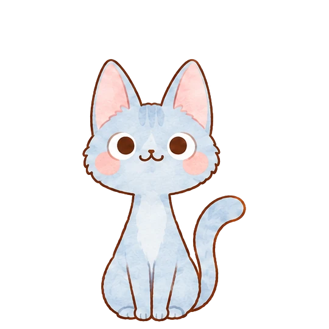

<!doctype html>
<html lang="en">
<meta charset="utf-8">
<meta name="viewport" content="width=device-width, initial-scale=1">
<meta name="robots" content="noindex, nofollow">
<meta name="theme-color" content="#fff7ee">
<title>Catcade | Original prototype</title>
<link rel="icon" href="play/img/icon.png">
<style>
  :root { color-scheme: light; font: 17px/1.5 system-ui, sans-serif; color: #37272b; background: #fff7ee; }
  body { min-height: 100svh; margin: 0; display: grid; place-items: center; }
  main { box-sizing: border-box; width: min(100%, 33rem); padding: 2.5rem 1.25rem; text-align: center; }
  img { display: block; width: 10rem; height: auto; margin: 0 auto 1.25rem; }
  h1 { font-size: clamp(2.75rem, 10vw, 3.75rem); letter-spacing: -.05em; line-height: 1.06; margin: 0; }
  p { margin: .75rem 0 1.6rem; }
  a { display: block; color: #49313b; padding: .75rem 1rem; margin: .55rem auto; width: min(100% - 2rem, 18rem); font-weight: 650; }
  a.primary { border-radius: .9rem; background: #f7c9d7; text-decoration: none; }
</style>
<main>
  
  <h1>Catcade</h1>
  <p>The playable iPhone prototype that Catcade Daily was ported from.</p>
  <a class="primary" href="play/?screen=play-boxes&amp;review=0">Play Box Fort</a>
  <a href="play/?screen=club&amp;review=0">Explore the original clubhouse</a>
</main>
